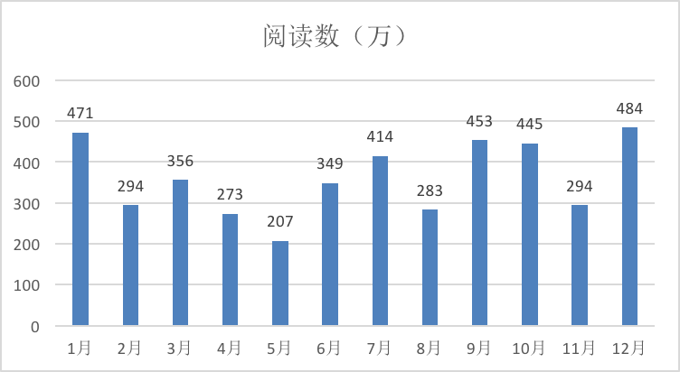
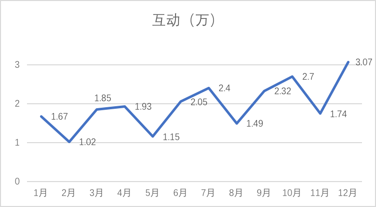
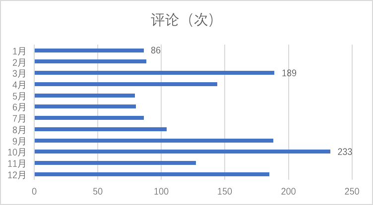
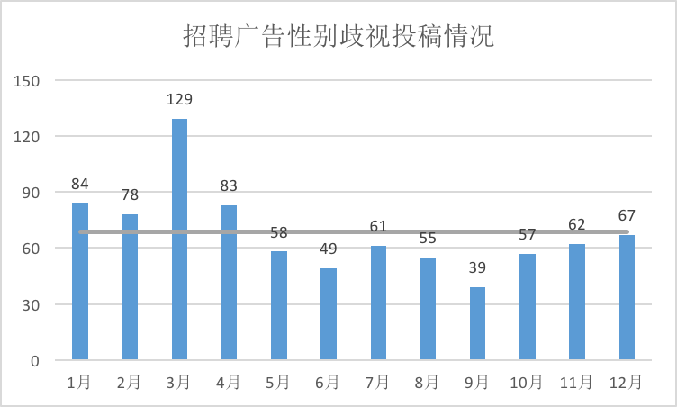
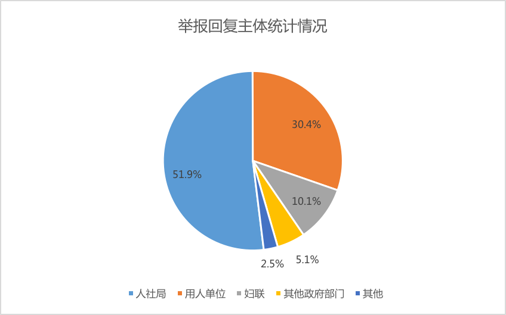
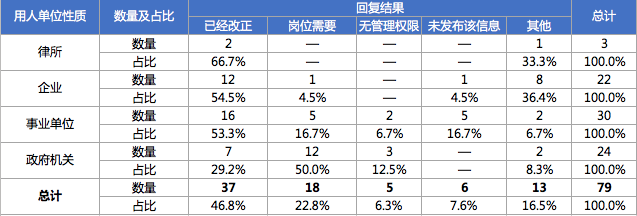

@就业性别歧视监察大队 是由一群不愿继续忍受招聘活动中性别歧视现状的女青年发起成立的小组。通过线上曝光、线下举报违法违规的用人单位，发布海内外相关资讯，以减少招聘活动中的性别歧视行为，提高公众对女性就业环境的关注。1.年末粉丝人数定格在24.38万，越来越多的人开始关注招聘中的性别歧视
2.每月微博阅读数在200-500万之间，纠正用人单位招聘中的性别歧视有赖社会整体意识的提升

3.互动数在1-3万之间波折上升，期待未来能有更多有益的探讨

4.10月份评论最多为233次，每一次回应都只为重申招聘性别歧视是违法行为

Part 2: 就业性别歧视举报情况
1.年内我们收到了822起关于招聘就业性别歧视的投稿，月均约69起，均已在微博上进行曝光。
2.年内，我们最少举报了150起招聘广告中的性别歧视现象，但是仅79起举报收到回复。从回复主体来看，人社局是法定回复的主体，受理举报的人社局均开展了调查，纠正了部分用人单位的违法行为；用人单位关注自身合法用工情况，发现被举报后，主动对设置性别条件的原因进行说明，并承诺在今后的招聘中加以避免；妇联关注网络维权动态，根据微博提供的线索进行核实，维护女性的平等就业权。
3.从回复结果来看，接近半数的用人单位在被举报和调查后撤回或纠正了违法的招聘广告，也因此均未被处罚。律所、企业和事业单位的整改情况较好，半数以上的回复称确实存在不当行为，目前已经整改；公务员招录性别歧视的举报多被以人社局无管理权限或用人单位岗位需要不存在性别歧视的理由拒绝，少数政府部门回应称“岗位条件确实艰苦，但是这也不是绝对，巾帼不让须眉，也有表现优秀的女同志，在今后的选调工作中会慎重考虑我们不限制岗位性别的建议。”
感谢关注，新的一年，我们将继续专注
消除就业性别歧视。